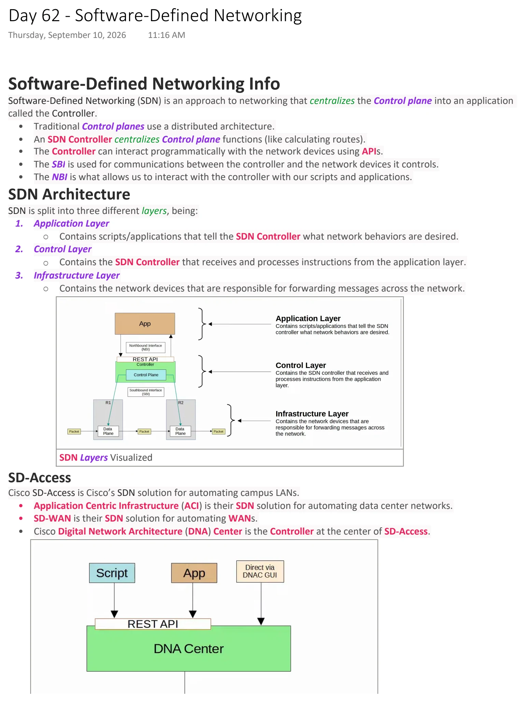
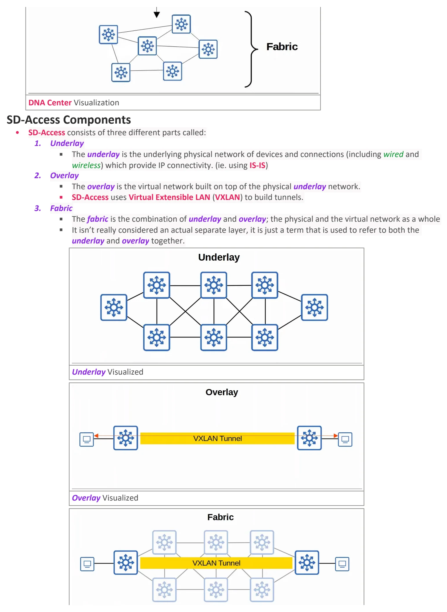
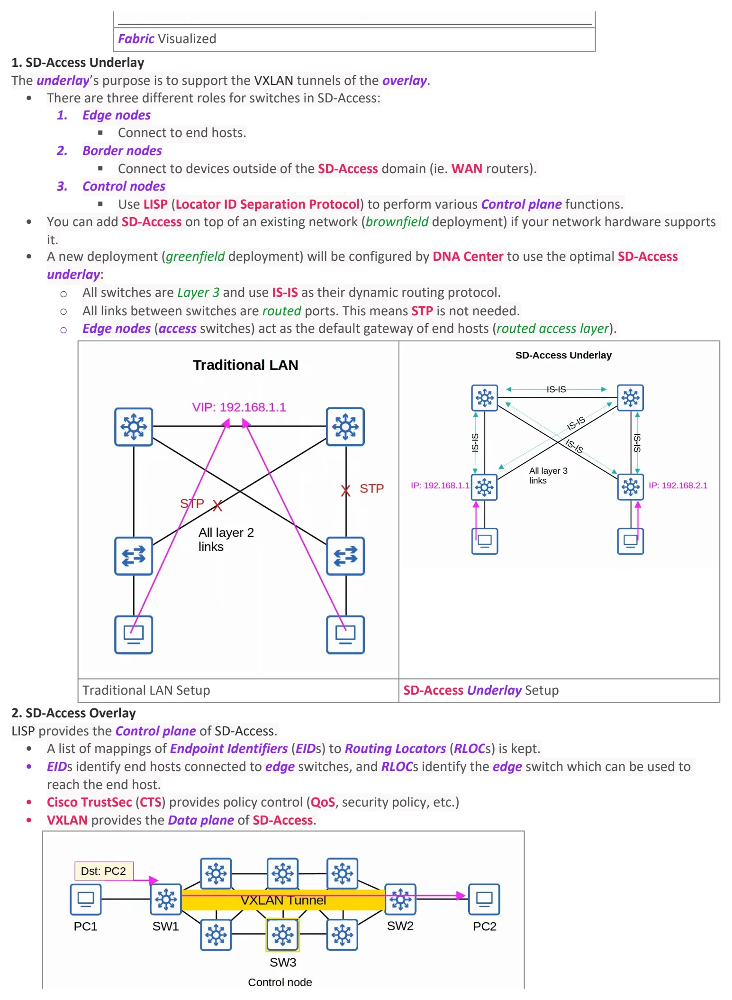
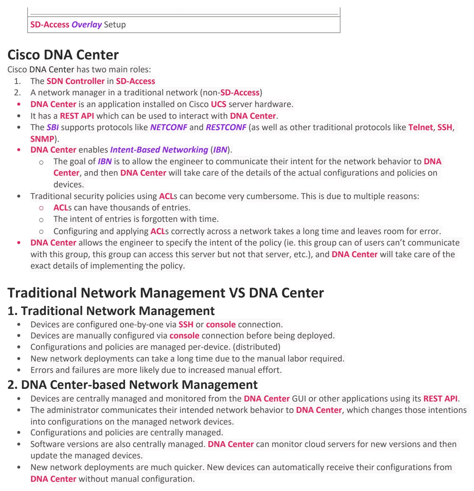

Software-Defined Networking
Download original PDF



Text view — Software-Defined Networking
Extracted from the original export. Diagrams and some formatting appear in the notes above.
Day 62 - Software-Defined Networking Thursday, September 10, 2026 11:16 AM Software-Defined Networking Info Software-Defined Networking (SDN) is an approach to networking that centralizes the Control plane into an application called the Controller. • Traditional Control planes use a distributed architecture. • An SDN Controller centralizes Control plane functions (like calculating routes). • The Controller can interact programmatically with the network devices using APIs. • The SBI is used for communications between the controller and the network devices it controls. • The NBI is what allows us to interact with the controller with our scripts and applications. SDN Architecture SDN is split into three different layers, being: 1. Application Layer ○ Contains scripts/applications that tell the SDN Controller what network behaviors are desired. 2. Control Layer ○ Contains the SDN Controller that receives and processes instructions from the application layer. 3. Infrastructure Layer ○ Contains the network devices that are responsible for forwarding messages across the network. SDN Layers Visualized SD-Access Cisco SD-Access is Cisco’s SDN solution for automating campus LANs. • Application Centric Infrastructure (ACI) is their SDN solution for automating data center networks. • SD-WAN is their SDN solution for automating WANs. • Cisco Digital Network Architecture (DNA) Center is the Controller at the center of SD-Access. DNA Center Visualization SD-Access Components • SD-Access consists of three different parts called: 1. Underlay § The underlay is the underlying physical network of devices and connections (including wired and wireless) which provide IP connectivity. (ie. using IS-IS) 2. Overlay § The overlay is the virtual network built on top of the physical underlay network. § SD-Access uses Virtual Extensible LAN (VXLAN) to build tunnels. 3. Fabric § The fabric is the combination of underlay and overlay; the physical and the virtual network as a whole § It isn’t really considered an actual separate layer, it is just a term that is used to refer to both the underlay and overlay together. Underlay Visualized Overlay Visualized Fabric Visualized 1. SD-Access Underlay The underlay’s purpose is to support the VXLAN tunnels of the overlay. • There are three different roles for switches in SD-Access: 1. Edge nodes § Connect to end hosts. 2. Border nodes § Connect to devices outside of the SD-Access domain (ie. WAN routers). 3. Control nodes § Use LISP (Locator ID Separation Protocol) to perform various Control plane functions. • You can add SD-Access on top of an existing network (brownfield deployment) if your network hardware supports it. • A new deployment (greenfield deployment) will be configured by DNA Center to use the optimal SD-Access underlay: ○ All switches are Layer 3 and use IS-IS as their dynamic routing protocol. ○ All links between switches are routed ports. This means STP is not needed. ○ Edge nodes (access switches) act as the default gateway of end hosts (routed access layer). Traditional LAN Setup SD-Access Underlay Setup 2. SD-Access Overlay LISP provides the Control plane of SD-Access. • A list of mappings of Endpoint Identifiers (EIDs) to Routing Locators (RLOCs) is kept. • EIDs identify end hosts connected to edge switches, and RLOCs identify the edge switch which can be used to reach the end host. • Cisco TrustSec (CTS) provides policy control (QoS, security policy, etc.) • VXLAN provides the Data plane of SD-Access. SD-Access Overlay Setup Cisco DNA Center Cisco DNA Center has two main roles: 1. The SDN Controller in SD-Access 2. A network manager in a traditional network (non-SD-Access) • DNA Center is an application installed on Cisco UCS server hardware. • It has a REST API which can be used to interact with DNA Center. • The SBI supports protocols like NETCONF and RESTCONF (as well as other traditional protocols like Telnet, SSH, SNMP). • DNA Center enables Intent-Based Networking (IBN). ○ The goal of IBN is to allow the engineer to communicate their intent for the network behavior to DNA Center, and then DNA Center will take care of the details of the actual configurations and policies on devices. • Traditional security policies using ACLs can become very cumbersome. This is due to multiple reasons: ○ ACLs can have thousands of entries. ○ The intent of entries is forgotten with time. ○ Configuring and applying ACLs correctly across a network takes a long time and leaves room for error. • DNA Center allows the engineer to specify the intent of the policy (ie. this group can of users can’t communicate with this group, this group can access this server but not that server, etc.), and DNA Center will take care of the exact details of implementing the policy. Traditional Network Management VS DNA Center 1. Traditional Network Management • Devices are configured one-by-one via SSH or console connection. • Devices are manually configured via console connection before being deployed. • Configurations and policies are managed per-device. (distributed) • New network deployments can take a long time due to the manual labor required. • Errors and failures are more likely due to increased manual effort. 2. DNA Center-based Network Management • Devices are centrally managed and monitored from the DNA Center GUI or other applications using its REST API. • The administrator communicates their intended network behavior to DNA Center, which changes those intentions into configurations on the managed network devices. • Configurations and policies are centrally managed. • Software versions are also centrally managed. DNA Center can monitor cloud servers for new versions and then update the managed devices. • New network deployments are much quicker. New devices can automatically receive their configurations from DNA Center without manual configuration. Day 62 - Software-Defined Networking Thursday, September 10, 2026 11:16 AM Software-Defined Networking Info Software-Defined Networking (SDN) is an approach to networking that centralizes the Control plane into an application called the Controller. • Traditional Control planes use a distributed architecture. • An SDN Controller centralizes Control plane functions (like calculating routes). • The Controller can interact programmatically with the network devices using APIs. • The SBI is used for communications between the controller and the network devices it controls. • The NBI is what allows us to interact with the controller with our scripts and applications. SDN Architecture SDN is split into three different layers, being: 1. Application Layer ○ Contains scripts/applications that tell the SDN Controller what network behaviors are desired. 2. Control Layer ○ Contains the SDN Controller that receives and processes instructions from the application layer. 3. Infrastructure Layer ○ Contains the network devices that are responsible for forwarding messages across the network. SDN Layers Visualized SD-Access Cisco SD-Access is Cisco’s SDN solution for automating campus LANs. • Application Centric Infrastructure (ACI) is their SDN solution for automating data center networks. • SD-WAN is their SDN solution for automating WANs. • Cisco Digital Network Architecture (DNA) Center is the Controller at the center of SD-Access. DNA Center Visualization SD-Access Components • SD-Access consists of three different parts called: 1. Underlay § The underlay is the underlying physical network of devices and connections (including wired and wireless) which provide IP connectivity. (ie. using IS-IS) 2. Overlay § The overlay is the virtual network built on top of the physical underlay network. § SD-Access uses Virtual Extensible LAN (VXLAN) to build tunnels. 3. Fabric § The fabric is the combination of underlay and overlay; the physical and the virtual network as a whole § It isn’t really considered an actual separate layer, it is just a term that is used to refer to both the underlay and overlay together. Underlay Visualized Overlay Visualized Fabric Visualized 1. SD-Access Underlay The underlay’s purpose is to support the VXLAN tunnels of the overlay. • There are three different roles for switches in SD-Access: 1. Edge nodes § Connect to end hosts. 2. Border nodes § Connect to devices outside of the SD-Access domain (ie. WAN routers). 3. Control nodes § Use LISP (Locator ID Separation Protocol) to perform various Control plane functions. • You can add SD-Access on top of an existing network (brownfield deployment) if your network hardware supports it. • A new deployment (greenfield deployment) will be configured by DNA Center to use the optimal SD-Access underlay: ○ All switches are Layer 3 and use IS-IS as their dynamic routing protocol. ○ All links between switches are routed ports. This means STP is not needed. ○ Edge nodes (access switches) act as the default gateway of end hosts (routed access layer). Traditional LAN Setup SD-Access Underlay Setup 2. SD-Access Overlay LISP provides the Control plane of SD-Access. • A list of mappings of Endpoint Identifiers (EIDs) to Routing Locators (RLOCs) is kept. • EIDs identify end hosts connected to edge switches, and RLOCs identify the edge switch which can be used to reach the end host. • Cisco TrustSec (CTS) provides policy control (QoS, security policy, etc.) • VXLAN provides the Data plane of SD-Access. SD-Access Overlay Setup Cisco DNA Center Cisco DNA Center has two main roles: 1. The SDN Controller in SD-Access 2. A network manager in a traditional network (non-SD-Access) • DNA Center is an application installed on Cisco UCS server hardware. • It has a REST API which can be used to interact with DNA Center. • The SBI supports protocols like NETCONF and RESTCONF (as well as other traditional protocols like Telnet, SSH, SNMP). • DNA Center enables Intent-Based Networking (IBN). ○ The goal of IBN is to allow the engineer to communicate their intent for the network behavior to DNA Center, and then DNA Center will take care of the details of the actual configurations and policies on devices. • Traditional security policies using ACLs can become very cumbersome. This is due to multiple reasons: ○ ACLs can have thousands of entries. ○ The intent of entries is forgotten with time. ○ Configuring and applying ACLs correctly across a network takes a long time and leaves room for error. • DNA Center allows the engineer to specify the intent of the policy (ie. this group can of users can’t communicate with this group, this group can access this server but not that server, etc.), and DNA Center will take care of the exact details of implementing the policy. Traditional Network Management VS DNA Center 1. Traditional Network Management • Devices are configured one-by-one via SSH or console connection. • Devices are manually configured via console connection before being deployed. • Configurations and policies are managed per-device. (distributed) • New network deployments can take a long time due to the manual labor required. • Errors and failures are more likely due to increased manual effort. 2. DNA Center-based Network Management • Devices are centrally managed and monitored from the DNA Center GUI or other applications using its REST API. • The administrator communicates their intended network behavior to DNA Center, which changes those intentions into configurations on the managed network devices. • Configurations and policies are centrally managed. • Software versions are also centrally managed. DNA Center can monitor cloud servers for new versions and then update the managed devices. • New network deployments are much quicker. New devices can automatically receive their configurations from DNA Center without manual configuration. Day 62 - Software-Defined Networking Thursday, September 10, 2026 11:16 AM Software-Defined Networking Info Software-Defined Networking (SDN) is an approach to networking that centralizes the Control plane into an application called the Controller. • Traditional Control planes use a distributed architecture. • An SDN Controller centralizes Control plane functions (like calculating routes). • The Controller can interact programmatically with the network devices using APIs. • The SBI is used for communications between the controller and the network devices it controls. • The NBI is what allows us to interact with the controller with our scripts and applications. SDN Architecture SDN is split into three different layers, being: 1. Application Layer ○ Contains scripts/applications that tell the SDN Controller what network behaviors are desired. 2. Control Layer ○ Contains the SDN Controller that receives and processes instructions from the application layer. 3. Infrastructure Layer ○ Contains the network devices that are responsible for forwarding messages across the network. SDN Layers Visualized SD-Access Cisco SD-Access is Cisco’s SDN solution for automating campus LANs. • Application Centric Infrastructure (ACI) is their SDN solution for automating data center networks. • SD-WAN is their SDN solution for automating WANs. • Cisco Digital Network Architecture (DNA) Center is the Controller at the center of SD-Access. DNA Center Visualization SD-Access Components • SD-Access consists of three different parts called: 1. Underlay § The underlay is the underlying physical network of devices and connections (including wired and wireless) which provide IP connectivity. (ie. using IS-IS) 2. Overlay § The overlay is the virtual network built on top of the physical underlay network. § SD-Access uses Virtual Extensible LAN (VXLAN) to build tunnels. 3. Fabric § The fabric is the combination of underlay and overlay; the physical and the virtual network as a whole § It isn’t really considered an actual separate layer, it is just a term that is used to refer to both the underlay and overlay together. Underlay Visualized Overlay Visualized Fabric Visualized 1. SD-Access Underlay The underlay’s purpose is to support the VXLAN tunnels of the overlay. • There are three different roles for switches in SD-Access: 1. Edge nodes § Connect to end hosts. 2. Border nodes § Connect to devices outside of the SD-Access domain (ie. WAN routers). 3. Control nodes § Use LISP (Locator ID Separation Protocol) to perform various Control plane functions. • You can add SD-Access on top of an existing network (brownfield deployment) if your network hardware supports it. • A new deployment (greenfield deployment) will be configured by DNA Center to use the optimal SD-Access underlay: ○ All switches are Layer 3 and use IS-IS as their dynamic routing protocol. ○ All links between switches are routed ports. This means STP is not needed. ○ Edge nodes (access switches) act as the default gateway of end hosts (routed access layer). Traditional LAN Setup SD-Access Underlay Setup 2. SD-Access Overlay LISP provides the Control plane of SD-Access. • A list of mappings of Endpoint Identifiers (EIDs) to Routing Locators (RLOCs) is kept. • EIDs identify end hosts connected to edge switches, and RLOCs identify the edge switch which can be used to reach the end host. • Cisco TrustSec (CTS) provides policy control (QoS, security policy, etc.) • VXLAN provides the Data plane of SD-Access. SD-Access Overlay Setup Cisco DNA Center Cisco DNA Center has two main roles: 1. The SDN Controller in SD-Access 2. A network manager in a traditional network (non-SD-Access) • DNA Center is an application installed on Cisco UCS server hardware. • It has a REST API which can be used to interact with DNA Center. • The SBI supports protocols like NETCONF and RESTCONF (as well as other traditional protocols like Telnet, SSH, SNMP). • DNA Center enables Intent-Based Networking (IBN). ○ The goal of IBN is to allow the engineer to communicate their intent for the network behavior to DNA Center, and then DNA Center will take care of the details of the actual configurations and policies on devices. • Traditional security policies using ACLs can become very cumbersome. This is due to multiple reasons: ○ ACLs can have thousands of entries. ○ The intent of entries is forgotten with time. ○ Configuring and applying ACLs correctly across a network takes a long time and leaves room for error. • DNA Center allows the engineer to specify the intent of the policy (ie. this group can of users can’t communicate with this group, this group can access this server but not that server, etc.), and DNA Center will take care of the exact details of implementing the policy. Traditional Network Management VS DNA Center 1. Traditional Network Management • Devices are configured one-by-one via SSH or console connection. • Devices are manually configured via console connection before being deployed. • Configurations and policies are managed per-device. (distributed) • New network deployments can take a long time due to the manual labor required. • Errors and failures are more likely due to increased manual effort. 2. DNA Center-based Network Management • Devices are centrally managed and monitored from the DNA Center GUI or other applications using its REST API. • The administrator communicates their intended network behavior to DNA Center, which changes those intentions into configurations on the managed network devices. • Configurations and policies are centrally managed. • Software versions are also centrally managed. DNA Center can monitor cloud servers for new versions and then update the managed devices. • New network deployments are much quicker. New devices can automatically receive their configurations from DNA Center without manual configuration. Day 62 - Software-Defined Networking Thursday, September 10, 2026 11:16 AM Software-Defined Networking Info Software-Defined Networking (SDN) is an approach to networking that centralizes the Control plane into an application called the Controller. • Traditional Control planes use a distributed architecture. • An SDN Controller centralizes Control plane functions (like calculating routes). • The Controller can interact programmatically with the network devices using APIs. • The SBI is used for communications between the controller and the network devices it controls. • The NBI is what allows us to interact with the controller with our scripts and applications. SDN Architecture SDN is split into three different layers, being: 1. Application Layer ○ Contains scripts/applications that tell the SDN Controller what network behaviors are desired. 2. Control Layer ○ Contains the SDN Controller that receives and processes instructions from the application layer. 3. Infrastructure Layer ○ Contains the network devices that are responsible for forwarding messages across the network. SDN Layers Visualized SD-Access Cisco SD-Access is Cisco’s SDN solution for automating campus LANs. • Application Centric Infrastructure (ACI) is their SDN solution for automating data center networks. • SD-WAN is their SDN solution for automating WANs. • Cisco Digital Network Architecture (DNA) Center is the Controller at the center of SD-Access. DNA Center Visualization SD-Access Components • SD-Access consists of three different parts called: 1. Underlay § The underlay is the underlying physical network of devices and connections (including wired and wireless) which provide IP connectivity. (ie. using IS-IS) 2. Overlay § The overlay is the virtual network built on top of the physical underlay network. § SD-Access uses Virtual Extensible LAN (VXLAN) to build tunnels. 3. Fabric § The fabric is the combination of underlay and overlay; the physical and the virtual network as a whole § It isn’t really considered an actual separate layer, it is just a term that is used to refer to both the underlay and overlay together. Underlay Visualized Overlay Visualized Fabric Visualized 1. SD-Access Underlay The underlay’s purpose is to support the VXLAN tunnels of the overlay. • There are three different roles for switches in SD-Access: 1. Edge nodes § Connect to end hosts. 2. Border nodes § Connect to devices outside of the SD-Access domain (ie. WAN routers). 3. Control nodes § Use LISP (Locator ID Separation Protocol) to perform various Control plane functions. • You can add SD-Access on top of an existing network (brownfield deployment) if your network hardware supports it. • A new deployment (greenfield deployment) will be configured by DNA Center to use the optimal SD-Access underlay: ○ All switches are Layer 3 and use IS-IS as their dynamic routing protocol. ○ All links between switches are routed ports. This means STP is not needed. ○ Edge nodes (access switches) act as the default gateway of end hosts (routed access layer). Traditional LAN Setup SD-Access Underlay Setup 2. SD-Access Overlay LISP provides the Control plane of SD-Access. • A list of mappings of Endpoint Identifiers (EIDs) to Routing Locators (RLOCs) is kept. • EIDs identify end hosts connected to edge switches, and RLOCs identify the edge switch which can be used to reach the end host. • Cisco TrustSec (CTS) provides policy control (QoS, security policy, etc.) • VXLAN provides the Data plane of SD-Access. SD-Access Overlay Setup Cisco DNA Center Cisco DNA Center has two main roles: 1. The SDN Controller in SD-Access 2. A network manager in a traditional network (non-SD-Access) • DNA Center is an application installed on Cisco UCS server hardware. • It has a REST API which can be used to interact with DNA Center. • The SBI supports protocols like NETCONF and RESTCONF (as well as other traditional protocols like Telnet, SSH, SNMP). • DNA Center enables Intent-Based Networking (IBN). ○ The goal of IBN is to allow the engineer to communicate their intent for the network behavior to DNA Center, and then DNA Center will take care of the details of the actual configurations and policies on devices. • Traditional security policies using ACLs can become very cumbersome. This is due to multiple reasons: ○ ACLs can have thousands of entries. ○ The intent of entries is forgotten with time. ○ Configuring and applying ACLs correctly across a network takes a long time and leaves room for error. • DNA Center allows the engineer to specify the intent of the policy (ie. this group can of users can’t communicate with this group, this group can access this server but not that server, etc.), and DNA Center will take care of the exact details of implementing the policy. Traditional Network Management VS DNA Center 1. Traditional Network Management • Devices are configured one-by-one via SSH or console connection. • Devices are manually configured via console connection before being deployed. • Configurations and policies are managed per-device. (distributed) • New network deployments can take a long time due to the manual labor required. • Errors and failures are more likely due to increased manual effort. 2. DNA Center-based Network Management • Devices are centrally managed and monitored from the DNA Center GUI or other applications using its REST API. • The administrator communicates their intended network behavior to DNA Center, which changes those intentions into configurations on the managed network devices. • Configurations and policies are centrally managed. • Software versions are also centrally managed. DNA Center can monitor cloud servers for new versions and then update the managed devices. • New network deployments are much quicker. New devices can automatically receive their configurations from DNA Center without manual configuration.